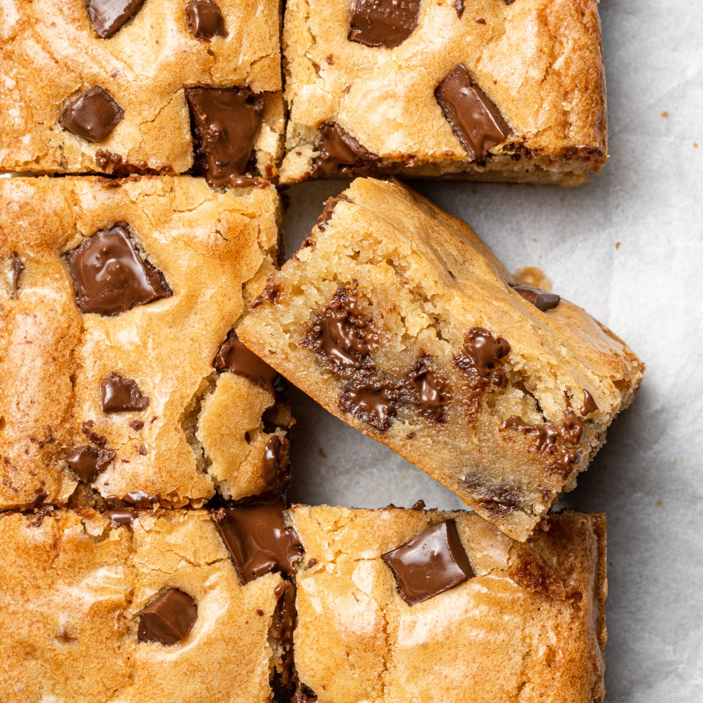

Blondies

A warm and gooey chocolate chip blondie recipe.
Ingredients
- 2 1/4 cups all-purpose flour
- 1 tsp. baking soda
- 1 tsp. salt
- 1 cup (2 sticks) butter, softened
- 3/4 cup granulated sugar
- 3/4 cup packed brown sugar
- 1 tsp. vanilla extract
- 2 large eggs
- 1 to 2 cups chocolate chips
Steps
- Preheat oven to 375 degrees F
- In a small bowl, combine flour, baking soda and salt
- In a large mixing bowl, beat butter, granulated sugar, brown sugar and vanilla extract until creamy
- Add eggs, one at a time beating well after each addition
- Beat in flour mixture gradually
- Stir in chocolate chips
- Pour and spread into greased 15x10 inch jelly-roll pan
- Bake for 20-25 minutes or until golden brown
- Cool on wire rack
Sugar Cookies

A sweet and soft sugar cookie recipe.
Ingredients
- 2 3/4 cups all-purpose flour
- 1 tsp. baking soda
- 1/2 tsp. baking powder
- 1 cup butter, softened
- 1 1/2 cups white sugar
- 1 egg
- 1 tsp. vanilla extract
Steps
- Preheat oven to 375 degrees F
- Stir flour, baking soda and baking powder together in a small bowl.
- Beat sugar and butter together in a large mixing bowl.
- Beat egg and vanilla extract.
- Gradually blend in flour mixture.
- Roll dough into walnut sized balls and place 2 inches apart onto ungreased baking sheets.
- Bake for 8 to 10 minutes or until edges are golden.
- Cool on wire rack.